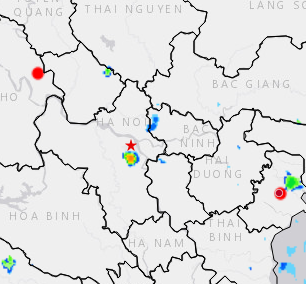

CẢNH BÁO MƯA DÔNG TRÊN KHU VỰC NỘI THÀNH HÀ NỘI
CẢNH BÁO NGUY HIỂM
Cảnh báo: Trong khoảng 15 đến 30 phút tới, các vùng mây đối lưu này sẽ tiếp tục phát triển, gây mưa rào và có thể có dông tại các quận: Hoàng Mai, Thanh Xuân, Đống Đa, Hai Bà Trưng, Hoàn Kiếm, sau đó có khả năng mở rộng sang các quận nội thành khác. Trong cơn dông có khả năng xuất hiện lốc, sét và gió giật mạnh.
Ngày mai thời tiết Hà Nội nhiệt độ thấp nhất là 20oC, cao nhất là 30o C. Có nơi có mưa rào và giông. Trong lúc mưa dông có khả năng xảy ra lốc xoáy, sét và gió giật mạnh. Chi tiết xem thêm tại Thời tiết
Tuy nhiên đến chiều tối mai thời tiết mát mẻ, rất phù hợp cho người dân có thể đi chơi cùng người thân thư giãn vào cuối tuần trên các con phố đi bộ trên địa bàn thành phố
Sau đó mọi người có thể về nhà và dạy con học, giúp bọn trẻ có thể giải các phương trình như: x2+5x+6=0 hay tính log10100 bằng bao nhiêu
Chương trình dự báo thời tiết của chúng tôi đến đây là kết thúc. Hẹn mọi người vào bắng giờ ngày mai. Chúc mọi người có một buổi tối vui vẻ bên gia đình!
